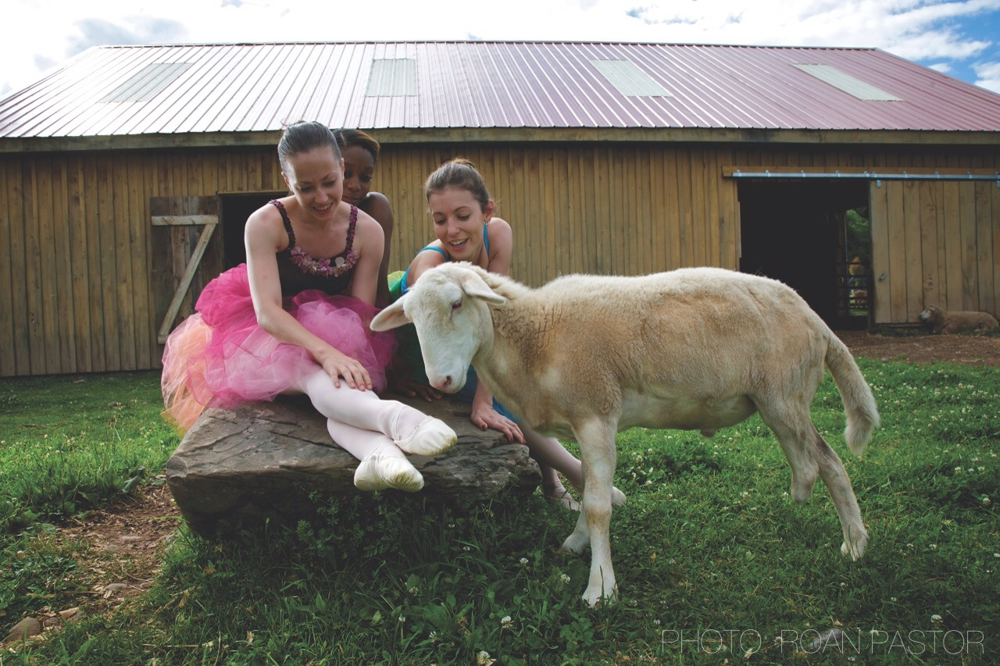

Clothing
"There is no morally coherent difference between fur and other animal clothing, such as leather, wool, etc., just as there is no morally coherent distinction between meat and milk or eggs."
What do Vegans Wear?
The selection of items and analogues available for vegan to wear is so wide, it's simply impossible to tell someone is a vegan by looking at their belt, shoes, or coat.
Some vegans will shop at specialty all-vegan stores while others order online. Either way, vegan clothing, shoes, and accessories are actually affordable and stylish. Like shopping for anything else, it's all about finding good deals.
What's Wrong with Wool?
The reason for avoiding leather is probably more obvious than avoiding wool. However, while the practice of taking wool off a sheep does not immediately require killing, sheep are still property. This means they are bred and enslaved to be products for humans. Often they are bred genetically to grow so much skin (and therefore wool) they form folds in which insects lay eggs. Producers must then cut off these folds in a process called "mulesing." After their "productivity" declines, they are sent to slaughter.
Leather
Leather isn't merely a "by-product" of the beef industry. In fact, most leather doesn't even come from the same type of cow used for beef.
Even if this were the case, it's important, again, to think of what we do to animals not in terms of "inflicting suffering," but their property status. If an animal is killed to create two different products, what sense does it make to say one product is a by-product while the other is the real thing? Animals are killed because their dead bodies can be sold in the form of various products.
Recycled/Secondhand
Is it vegan to buy products second-hand which contain leather or wool? After all, since they already exist, one is not causing additional suffering. It's important, again, not to think of this purely as an issue of "inflicting suffering." If you have seen the video of Herbie on the Why page, acting much like a puppy, ask yourself why a vegan would even want to wear that being's body regardless of the economic effect it has?
Being vegan means acknowledging the notion that animals are not lifeless objects which are on the planet for all of us humans to use.
So regardless of the amount of suffering you may not be causing to an animal, is it in line with your own beliefs to wear the body parts of murdered animals?
Vegan Clothing Links
(Above) Cynthia King Vegan Ballet Slippers
"$" denotes price range ($ = low, $$$$ = high)
Vegan Store
($-$$) Mens and womens shoes, clothing, accessories, as well as food items, vitamins, home goods and more.
Nice Shoes
($-$$) Shoes for men and women and e everything else a vegan may need including belts, bags, food, books, candles, etc.
Okabashi
($) Vegan and environmentally-friendly sandals and simple shoes.
MooShoes
($-$$$$) Shoes, jackets, belts, bags, wallets, etc for men and women.
Vegan Store UK
($-$$) Shoes for men and women, and all things vegan.
Alternative Outfitters
($-$$) Shoes and accessories for men and women.
Vegan Chic
($-$$) Shoes and accessories for women, men and kids.
Muso Koroni
($$) Men's and Women's Clothes, shoes, accessories, products.
Noah
($$-$$$) Italian vegan shoes for men and women.
Vegetarian Shoes
($-$$) (All vegan, despite the name) Shoes, clothes, accessories and products. (UK international orders.)
Cow Jones Industrials
($$-$$$) Vegan Boutique for Women (shoes, clothing, products).
Cri de Coeur
($$-$$$$) Couture women’s shoes and basics.
Olsen Haus
($$-$$$$) Couture women’s (children’s and some men’s) footware.
Mama Shaman
($$) Women’s, men’s, and children’s shoes and accessories.
Veganwares
($$-$$$$) Shoes for women and men.
Freerangers
($-$$) Vegan shoes, belt, and accessories for women and men.
BBoheme
($-$$) Quality shoes and accessories for men and women.
Ethicalwares
($-$$) Shoes for men and women.
Melissa
($$$-$$$$) Recycled plastic designer shoes.
Cynthia King Ballet Slippers
($) Vegan, eco-friendly, high quality ballet slippers. Comes in three colors.
Women Only
Neuaura Shoes
($$) Shoes for Women
Roni Kantor
($$) Vintage style shoes, clothing and accessories for women. International customers place order inquiries here
Beyond Skin
($$-$$$) Women's Shoes
Cri de Coeur
($$-$$$$) Women’s shoes and basics.
Love is Mighty
($$-$$$$) Women's Shoes
Compassionate Couture
($$-$$$$) Women’s shoes and accessories.
Charmone
($$-$$$$) Women's Shoes
Men Only
No harm
($$$) All mens shoe collection.
Brave Gentleman
($-$$) Mens shoes, clothes, ties, cologne and more.
Children Only
CBHStudio
($$$) Cute bags, backpacks, lunchbags, change purses and more for kids.
Coats
Alternative Outfitters
($-$$) Coats for women and men.
Vegan Store
($-$$$) Special section for winter gear including a peacoat and pleather jacket.
MooShoes
($-$$$$) Offering jackets, shirts, sweatshirts and outerwear.
Muso Koroni
($$-$$$) Features a winterwear category for men and women.
Vaute Couture
($$$-$$$$) Coats for men and women.
Bags
Matt and Nat
($$-$$$) Wide selection of stylish bags
Red Handed Bags
($$-$$$) Designer-quality bags with a fresh style.
Susan Nichole
($-$$) Designer of vegan bags that are both affordable and fashionable.
Cherry Berry
($$) Colorful vegan bags and wallets.
Gunas
($$$-$$$$) Luxury designer bags for men and women.
Never Leather Land
($-$$) Messenger bags and some clothing for men and women.
Miscellaneous
Couch Guitar Straps
($$) An all-vegan line of guitar straps with a wide selection of styles.
Vintage Style Women's Shoes
($-$$) One of our favorite vegan shoe designers. Roni Kantor's shoe line is adorable and stylish.
Laptop Case
($$$) Minka bag From Matt and Natt.
Weightlifting Gloves
($$$-$$$$) Special vegan heavy duty workout gloves from NewGrip
Dance Shoes
($$) Stylish dancing shoes for men and women.
Cynthia King Ballet Slippers
($) Beautiful ballet shoes with materials that are soft yet made to perform.
Birkenstocks
($-$$) Identical to the classic Birkenstock shoe style, EthicalWares offers a decent selection of this simple sandal shoe.
“I'm vegan because I believe all animals are members of the moral community, and I reject violence against them by not using any animal products."